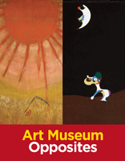

A book of opposites for young readers, based on the Philadelphia Museum of Art's collections
A book of opposites for young readers, based on the Philadelphia Museum of Art's collections


 A book of opposites for young readers, based on the Philadelphia Museum of Art's collections
A book of opposites for young readers, based on the Philadelphia Museum of Art's collections

|  |
Art Museum OppositesKaty Friedland and Marla K. Shoemakercloth EAN: 978-1-43990-523-4 (ISBN: 1-4399-0523-1) |
As children start to learn the differences between night and day, big and small, and old and new, Art Museum Opposites can teach them how to understand these distinctions visually by using paintings, sculptures, and other objects from the famed collections of the Philadelphia Museum of Art. In 15 full-color spreads, young readers can have fun comparing a bright summer day as painted by Marc Chagall with a moonlit night as depicted by Joan Miró, or contrasting "inside" and "outside" by spotting the differences between scenes of monkeys as represented by Antoine Vollon and Henri Rousseau.
Written by museum educators Katy Friedland and Marla K. Shoemaker, the authors of the award-winning A is for Art Museum, the images in Art Museum Opposites prompt children to compare the images on each spread and make up stories about what they see. The works of art featured in this book will stimulate children's imaginations, inspire interactions between adults and kids, and encourage a trip to the museum to see the works first-hand.
Recommended for ages 4-8
Published in association with the Philadelphia Museum of Art
"The thoughtfully written text adds interest to the illustrations. The book ends with a note suggesting other activities that parents and children can do with the book. This is a great way to introduce young children to fine art, and a good book to review before a family or school trip to a museum."
—School Library Journal
Katy Friedland is Museum Educator and Internship Coordinator at the Philadelphia Museum of Art, and the co-author of A is for Art Museum.
Marla K. Shoemaker is the Kathleen C. Sherrerd Senior Curator of Education at the Philadelphia Museum of Art, and the co-author of A is for Art Museum.
General Interest
Philadelphia Region
Education
© 2015 Temple University. All Rights Reserved. This page: http://www.temple.edu/tempress/titles/2139_reg.html.